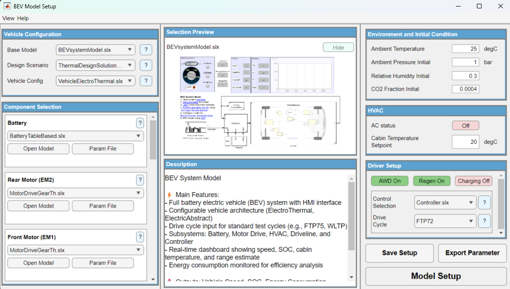
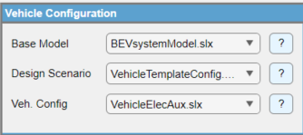
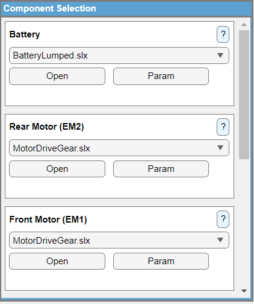
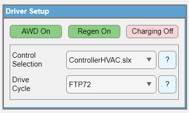

VehicleElectric_default
Fast electrical configuration for traction and basic range studies.
Configure, inspect, save, and export a BEV model without navigating the repository structure
The BEV Setup App is the primary interactive utility. It selects a vehicle template, discovers available component fidelities, links parameter files, sets environment/HVAC/driver choices, and applies the configuration to the shared system model.

Choose VehicleElectric, VehicleElecAux, or VehicleElectroThermal and start from a shipped or user-saved setup.
The app scans the canonical component folders, shows compatible models, previews the selected canvas, and lets you link the owning parameter script.
Define initial conditions, cabin demand, drive mode, controller, and drive cycle.
The app validates references and parameter links, configures the model, exports replayable scripts, and writes a build snapshot.



Use the preset picker for a fast visual starting point, then open the app when you need to change component fidelity or parameterization.
Fast electrical configuration for traction and basic range studies.
Adds HVAC and pump auxiliary demand without the complete thermal loop.
Full coolant, cabin, battery, motor, inverter, charger, and heat-rejection behavior.
Stores the current selection in utils/APP/Config/User as a reusable JSON configuration.
Generates a MATLAB script that calls the linked parameter file for every selected component.
Applies the model references and dashboard settings and writes setup scripts plus a build README.
This future utility starts from one documented workflow, follows its required shared components and vehicle assets, and transports only that dependency closure into a user-owned MATLAB Project. It remains a prototype; the real app action below opens the existing configuration app.